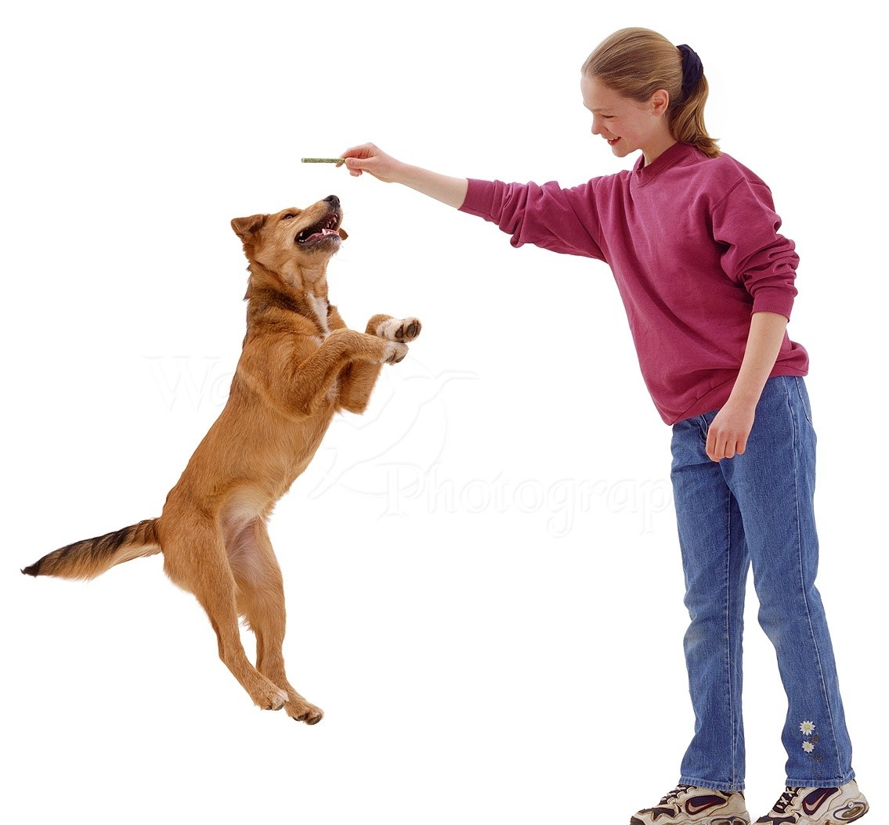

<div class="row">
    <div class="col-md-4">
        <div class="card box">
            <center>
                <h1 class="card-title" style="padding-top: 20px;font-size: 35px;">JUMP</h1>
            </center>
            <center></center>
            <div class="card-body">

                <p class="Card-text" style="font-size: 20px;padding-left: 10px; "> How to train your dog to Jump ? <br>
                    <br>
                    Does your dog jump on you as if they've got springs on their feet? Like it or not, we humans are to
                    blame. We not only permit this behavior, we encourage it. We know we shouldn't encourage jumping,
                    but a fuzzy puppy is just too cute to resist. We forget that cute behavior in a puppy can become a
                    real nuisance when they grow up.

                    Allowing your dog to jump on people can be dangerous too. You can end up scratched and bruised. A
                    child or frail adult can be knocked down and seriously injured.

                    Solving a behavior problem like jumping requires both management of the situation and training your
                    dog.
                    Dogs get to say hello face to face when they jump and even better, it’s guaranteed to get attention.
                    However, from a human point of view, jumping to greet is annoying and dangerous. Dressy clothes can
                    get soiled by muddy paws and people can be knocked over, especially seniors and children. It’s more
                    polite and far safer to teach your dog to greet people appropriately.

                    If you ignore your dog when they jump, theoretically their jumping behavior should eventually stop.
                    after all, it’s no longer being rewarded. however, every person you encounter in your home or on the
                    street isn’t going to know those rules. and even worse, that’s incredibly frustrating for your dog.
                    they need to be taught what to do instead.
                </p>
            </div>
        </div>
    </div>
</div>